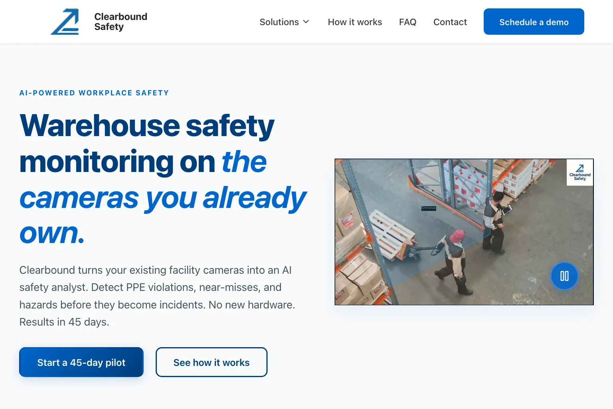
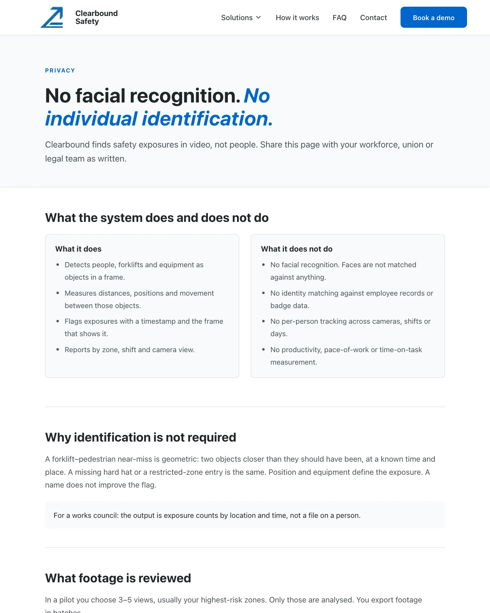
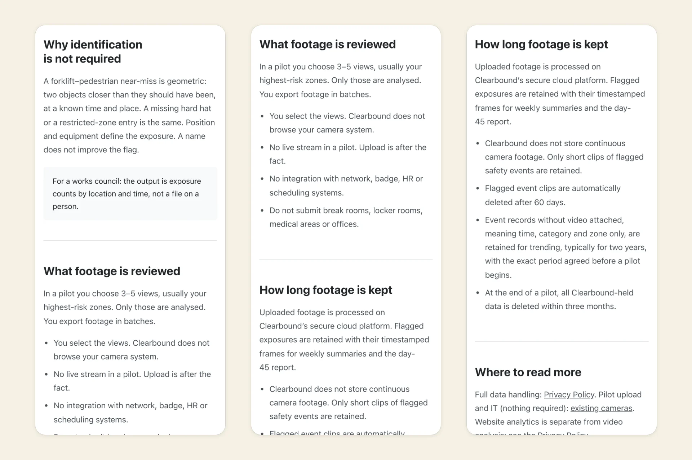
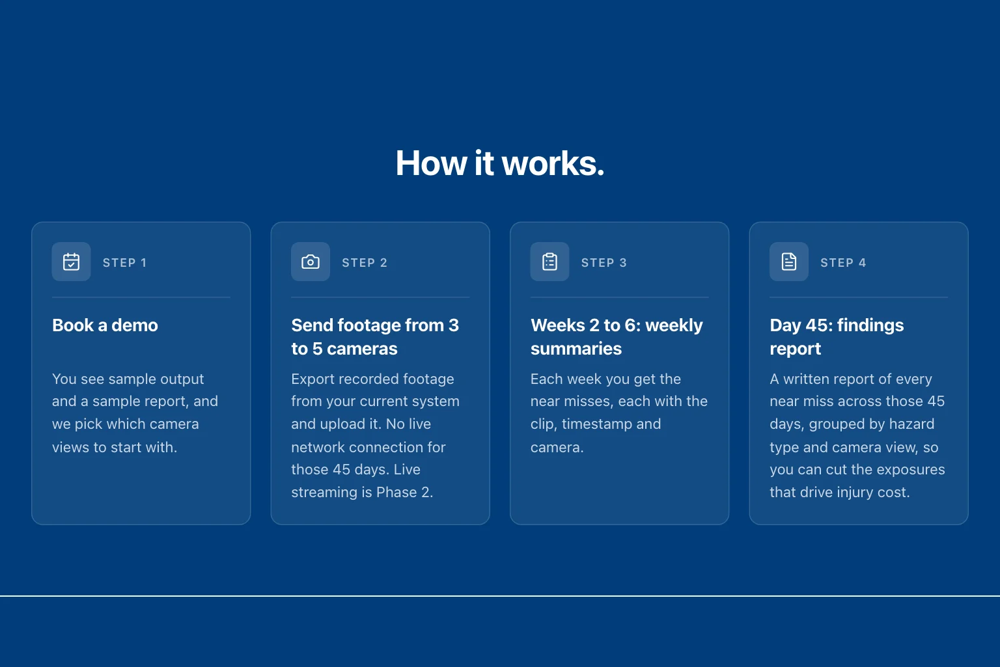
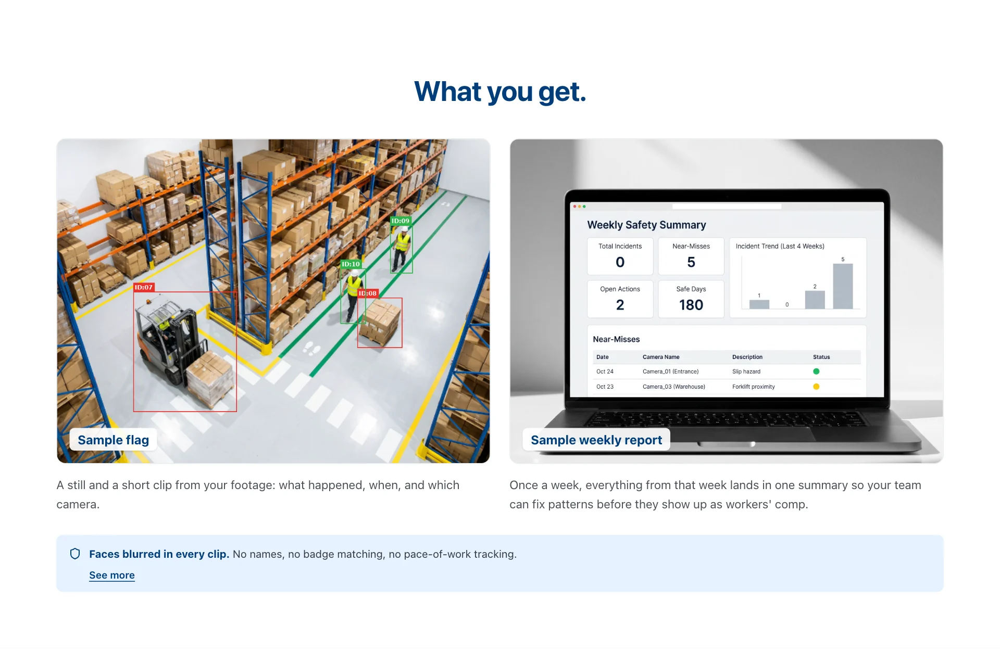
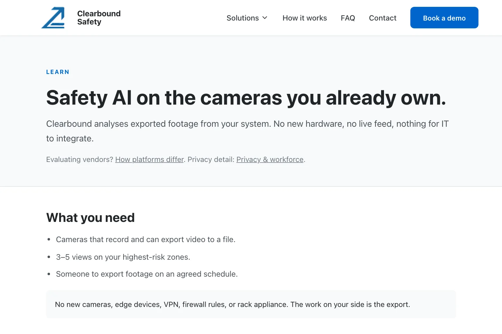
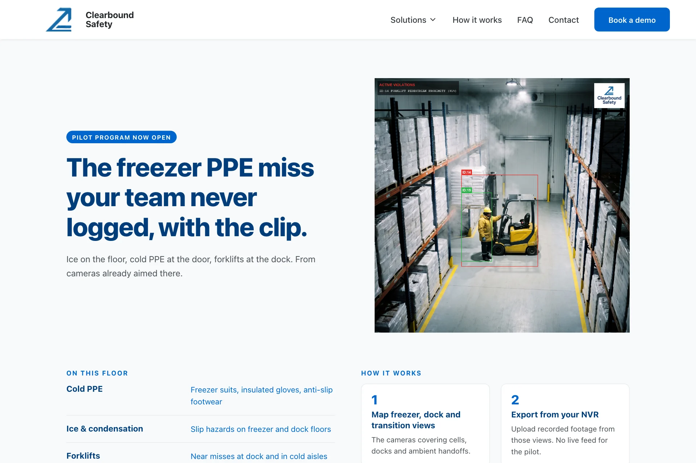
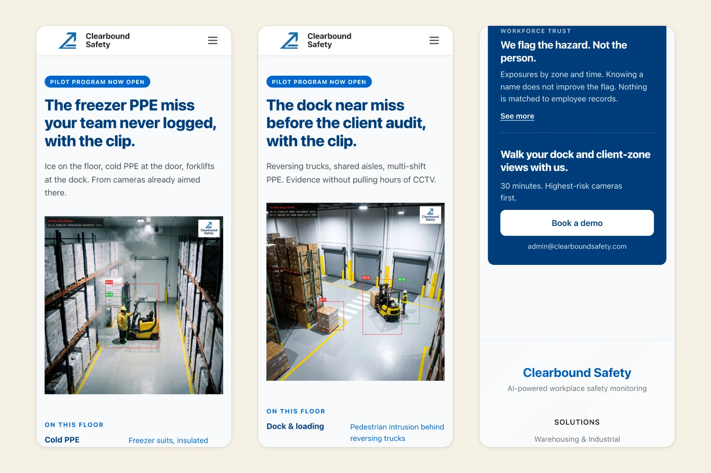

Clearbound Safety
Website design, copy and SEO for a startup selling AI safety monitoring to warehouses and food plants.
Web Design · Content Design · SEO · 2026
The problem
Clearbound uses AI on the cameras a warehouse already owns to flag near misses before they become injury claims. It had just opened its pilot program and had no customer results yet.
The technology wasn't the hard sell. To the floor team, AI on the cameras sounds like surveillance, and to IT a live video feed sounds like a security project. If either says no, there's no pilot.

Who it had to work for
Safety managers at warehouses and food plants, and the people they need a yes from, including the floor team, the union, legal and IT.
What I designed
Answer the surveillance question on the first screen. One line under the hero buttons says there is no facial recognition and links to the privacy page.
Claim only what is true today. "Detect" became "flag", and "results in 45 days" became a report on day 45.
Write the privacy page for the people who aren't on the sales call. It asks the buyer to forward it as written, and sets what the system does beside what it never does.

Give plain reasons and real numbers. The page explains why a name isn't needed to flag a near miss, and exactly how long footage is kept.

Keep the pilot small. It runs on 3 to 5 cameras with recorded footage only, so IT has nothing to set up.

Show the output before the sale. With no customers to quote, the homepage shows a sample flag and a sample weekly report.

How the site is structured
Every person who can stop a pilot gets a page. The homepage and industry pages are for the safety manager, the privacy page is for the floor and legal, and the existing cameras page is for IT.

The four industry pages share one template. Each opens with the hazard that floor worries about and ends on the same line, "We flag the hazard. Not the person."


Result
The site is live at clearboundsafety.com with the pilot program open for bookings. There are no customer results yet.
What this means for your product
If your product handles something people are wary of sharing, the buyer is rarely the only one who has to agree. Find out who else can say no, and give them a page they can read without you in the room.
Deliverables
- Site structure and copy
- Page design and front-end build
- SEO